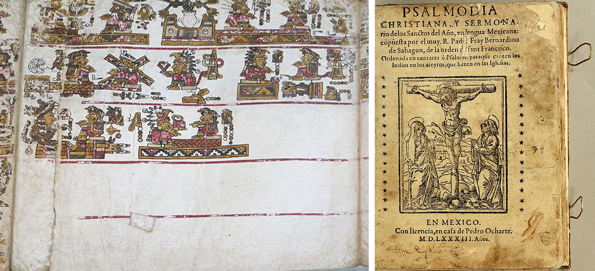
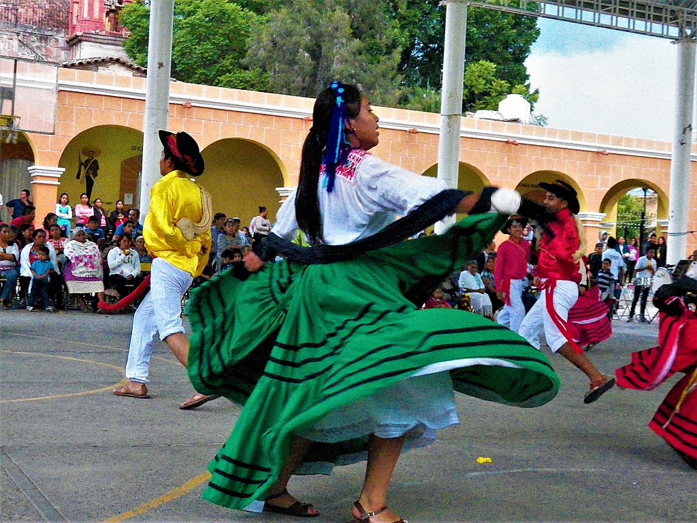

Conceptos clave
Vamos a Oaxaca, ¿nos acompañas?
Estamos en nuestro tiempo, en la costa de Oaxaca, México, muy cerca de Puerto Escondido, donde habita la etnia Chatina, quienes han permanecido en estas zonas desde la época prehispánica y tienen una cultura muy particular. ¿Habías oído hablar de los Chatinos? Revisa el siguiente video en el que podrás ver la riqueza cultural de esta etnia. Observa atentamente la cultura, costumbres y tradiciones del pueblo Chatino, toma notas sobre la información que te parezca relevante para que posteriormente la analicemos. Da clic en la imagen que aparece a continuación, luego vuelve aquí para continuar.
¿Qué te pareció el video?, ¿qué aprendiste a partir de él? Toma nota de todo lo que ha quedado en ti sobre esta importante cultura, ya que éste va a ser el punto de partida para analizarla con mayor profundidad y explorar algunos conceptos clave que forman parte de los estudios antropológicos.
La mayoría de los Chatinos son actualmente bilingües, es decir, hablan tanto español como Chatino. La Chatina no solo es una forma de preservar y transmitir su cultura y cosmovisión, sino que también, ha sido fundamental para conservar sus rituales y tradiciones. Por ejemplo, un ritual consiste en encender velas para pedir abundancia de maíz, frijol y agua, lo que en sí mismo constituye un vínculo entre naturaleza y creencias y a la vez un símbolo cultural que surge de la pues para ellos, el mar, los cerros y la tierra tienen significados sagrados y míticos, mientras que para la mayoría de nosotros no es así.
¡Tenemos todo listo! Es el momento idóneo.

Foro: Producción de significados
Te invitamos a participar en el foro “Producción de Significados”, en este espacio tus ideas cobran vida y son esenciales para enriquecer la conversación. ¿Todo listo para ser parte de esto? ¡Únete y prepárate para descubrir la magia detrás de la producción de significados en nuestras vidas!
¿Qué te pareció esta charla entre compañeros? ¿Qué aprendiste y qué cosas nuevas descubriste? Anota todo para que se quede contigo y forme parte de ti. ¿De acuerdo?
Ahora es tiempo de conocer otras formas en las que se ha registrado y preservado la historia, cultura y conocimiento de las civilizaciones humanas. Estamos hablando de los códices y las crónicas.
¿Qué revelan los códices y las crónicas?
Los códices son principalmente documentos visuales que contienen ilustraciones, jeroglíficos y símbolos pictográficos, que representan ideas. Son maravillosos porque revelan información a través de imágenes y gráficos. Por su parte, las crónicas son elaboradas por personas que hablan de una cultura indígena, generalmente en su propia lengua (como el español o el inglés) para relatar eventos que ocurrieron en un determinado momento histórico.

Códice Bodley, que representa la unión matrimonial entre reyes del pueblo chatino y mixteco. Imagen de Jononmac46 y Portada de Psalmodia Christiana (1583). Texto elaborado por el cronista Bernardino de Sahagún sobre la evangelización de los mexicanos. Imagen de Biblioteca John Carter Brown.
Así como el lenguaje chatino nos permite conocer y comprender la cultura chatina, los y las crónicas que fueron dejados por los españoles cuando conquistaron esta tierra, son un medio importante para dar testimonio de esta cultura en tiempos pasados.
En tanto testimonio, los códices contribuyen a nuestro conocimiento sobre los mitos de la procedencia del pueblo chatino y su existencia desde tiempos prehispánicos, como el códice Bodley que, aunque es de origen mixteco debido a su estrecha relación con los chatinos, habla sobre las costumbres y alianzas de ambos pueblos. Por otro lado, los textos dejados por , también dan testimonio de lo que ocurrió y sigue ocurriendo en la comunidad. La vestimenta que utilizan en sus danzas es parte de su , puesto que son objetos que han sido utilizados, creados y modificados por la comunidad a lo largo de su historia.

Vestimenta tradicional para las danzas de la región chatina. Imagen de Lázaroselevantó. Wikimedia Commons
Hemos recorrido una parte del camino, y ahora nos detenemos para hacer una parada obligada en nuestra ruta.
La época prehispánica
Laguna de Manialtepec en San José Manialtepec, Tututepec, Oaxaca. Por las noches puede apreciarse una luz azul al mover el agua debido a los microorganismos presentes y a que el agua de la laguna se combina con la del mar. Imagen de Jaumahell. Wikimedia commons.
Estamos en la época prehispánica, mucho tiempo antes de que los españoles llegaran a México. El paisaje que observas es verde y exuberante, rodeado de montañas y árboles, donde los ríos serpentean por el terreno y llegan hasta el mar. Allí, los ancestros de la comunidad Chatina llevan a cabo sus actividades diarias, cultivando la tierra y construyendo viviendas.
Un anciano sabio te cuenta cómo los Chatinos migraron en busca de tierras fértiles y cómo formaron una comunidad unida, compartiendo conocimientos y tradiciones. Te percatas que esta comunidad guarda ciertas similitudes con la comunidad Chatina de nuestros tiempos, pero que también ha cambiado y se ha adaptado a las nuevas situaciones que se viven en la actualidad.
¿El cambio y la adaptación te recuerdan algún concepto importante en antropología? Piensa por un momento en tus clases de biología, ¿te resulta familiar el término evolución? ¿A qué hace referencia? Al hacer memoria, seguro llegan a tu mente algunas ideas, por ejemplo, que en biología, la evolución se refiere al proceso gradual y continuo mediante el cual las especies y organismos cambian a lo largo del tiempo, y que en antropología este importante concepto hace referencia al cambio cultural, social y biológico en las sociedades humanas con el transcurrir del tiempo.
¿Y la evolución en el pueblo chatino?
La que se observa en el pueblo chatino, como en todas las civilizaciones humanas, tiene que ver con las migraciones, las adaptaciones al entorno y cambios físicos y biológicos que han experimentado a lo largo de la historia. ¿Qué cambios físicos sería interesante investigar sobre los Chatinos? ¿Qué cambios culturales? ¿Qué más te interesa saber sobre el pueblo chatino? Quizás algo relacionado con su presente y su identidad étnica. Y entonces, para allá vamos.
Hemos vuelto al presente, según lo que los pobladores nos cuentan, los chatinos tienen una identidad étnica y cultural que proviene de la mezcla de diversas culturas y pueblos como los españoles, la afrodescendiente, los chilenos y los indígenas (mixtecos, zapotecos y chatinos), aunque no lo creas, este conjunto de elementos hace referencia a un concepto importante en antropología, se trata de la .
¿La etnogénesis y la evolución humana están relacionadas? Así es, estos dos términos se refieren a procesos de cambio y desarrollo en las poblaciones humanas, pero abordan diferentes aspectos. Para conocer las diferencias, da clic a continuación:

Japón, Etiopía y algo más
A continuación te mostramos ejemplos de algunos de los conceptos que acabamos de revisar. Da clic en el icono de H5p y revisa las frases asociadas con cada tarjeta, luego da clic sobre la tarjeta para ver de qué concepto se trata, ¡y eso es todo!
Esperamos que estos ejemplos sean muy útiles para ti y sobre todo que con ellos confirmes lo que hemos revisado hasta el momento. Y para continuar…
¿Te has percatado que para describir a este pueblo hemos hablado de su pasado y su presente?
Pues bien, para entender la vida del pueblo chatino se debe considerar tanto el pasado histórico como el presente social de esta comunidad. ¿Recuerdas los conceptos para referirnos al análisis desde una perspectiva temporal? ¡Muy cierto!, nos referimos a y . Por medio del análisis diacrónico hemos logrado observar cómo ha evolucionado el pueblo chatino y su etnogénesis, esto gracias a las evidencias biológicas, códices y crónicas dejadas por los cronistas. Por otro lado, el análisis sincrónico lo hemos realizado al observar su cultura material, su lenguaje y preguntar directamente a la comunidad sus costumbres y tradiciones en la actualidad. La antropología combina ambas formas para comprender la dinámica y la diversidad de las sociedades humanas.
Conceptos para comprender la cultura
Veamos qué tanto has aprendido hasta ahora, participa en el siguiente reto.
¿Qué tal te ha ido? Estamos seguros de que has logrado adquirir nuevos conocimientos. Es momento de continuar nuestro trayecto.